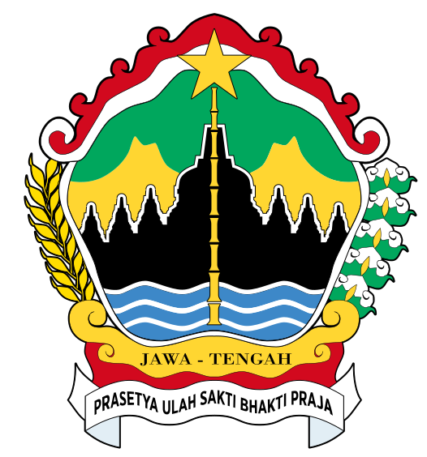

Mahasiswa dan Dosen PTS di Jawa Tengah
Periode Tahun 2021–2025
Filter Perguruan Tinggi dan Tahun
Total PTS
297
Total Mahasiswa
378.472
Total Dosen
13.075
Rasio
1:28
Tren Mahasiswa & Dosen — Semua Wilayah Jawa Tengah
Perkembangan jumlah mahasiswa dan dosen per tahun (2021–2025)
Klik nama PTS untuk melihat insight semua tahun
| No | Nama Perguruan Tinggi | Wilayah | Tahun | Mahasiswa | Dosen | Rasio |
|---|
Cari wilayah secara spesifik pada tabel di bawah.
| No | Wilayah | Perguruan Tinggi Swasta |
|---|